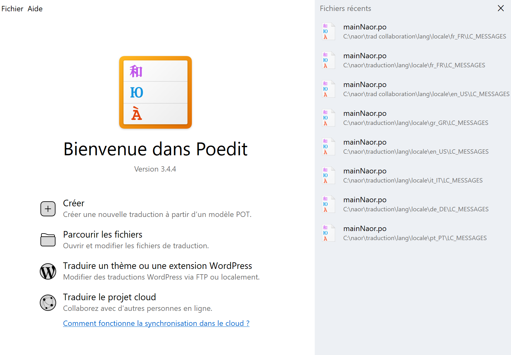

Stage Naor
Informations sur le stage
Nom de l'entreprise : Naor
Secteur d'activité : Recherche-developpement en biotechnologie
Nom domaine : Naor
Mission :
Durant mon stage chez Naor Innov, ma mission principale consistait à rendre leur site web multilingue . L'entreprise souhaitant étendre ses actions à l'international, il était nécessaire de traduire le site dans plusieurs langues pour toucher un public plus large. J'ai donc été chargé d'adapter le site pour qu'il soit accessible en cinq langues supplémentaires : anglais, allemand, italien, espagnol et portugais.
Moyens utilisés :
Pour accomplir cette tâche, j'ai eu accès aux fichiers PHP stockés sur leur serveur distant grâce au logiciel FileZilla , qui me permettait de les modifier à distance. Pour effectuer les traductions, j'ai utilisé Poedit , un logiciel spécialisé dans l'édition des fichiers de langue. J'ai également travaillé avec des bibliothèques de traduction et des fichiers JSON pour intégrer les nouvelles langues aux librairies déjà en place sur le site.
{kind=link}

L'objectif était d'adapter automatiquement la langue du site à celle du navigateur de l'utilisateur. De plus, une option a été ajoutée pour permettre aux utilisateurs de changer de langue manuellement une fois sur le site.
Problèmes rencontrés :
J'ai rencontré des difficultés principalement pour maintenir le choix de la langue lors des navigations entre les pages , car il était impossible d'utiliser les sessions en PHP pour gérer cette fonctionnalité. Cette limitation rendait complexe la persistance du changement de langue de manière automatique. Par ailleurs, j'ai rencontré des difficultés avec les mots comportant des accents et des caractères spéciaux , en particulier en espagnol, qui en possède de nombreux.
Résultats :
J’ai pu terminer la traduction complète du site dans les langues demandées à temps. En fin de stage, l’équipe m’a confié un bloc supplémentaire à traduire, mais je n’ai eu que le temps de commencer ce travail.

Conclusion :
Ce stage m’a permis de développer mes compétences en gestion de projet multilingue , en utilisation d’outils de traduction et en travail avec des serveurs distants. Il a été une expérience professionnelle enrichissante qui m'a permis de mettre en pratique mes compétences techniques tout en développant de nouvelles aptitudes.